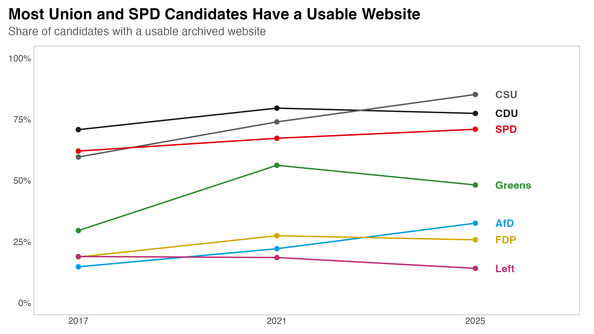
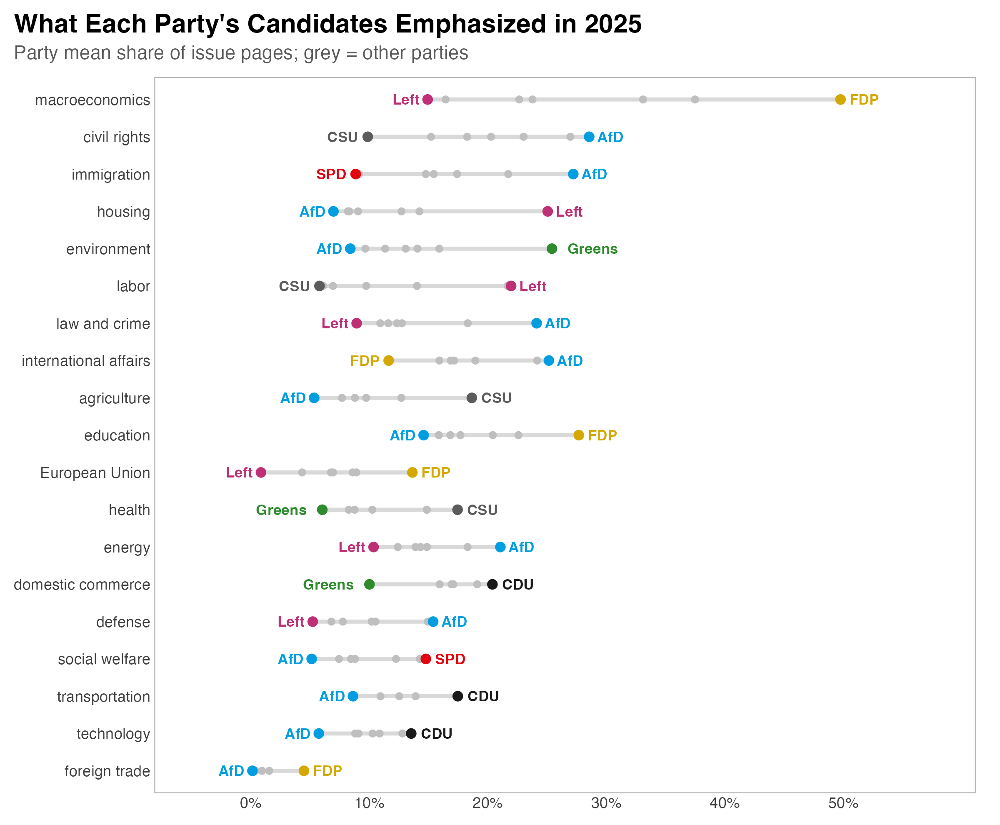
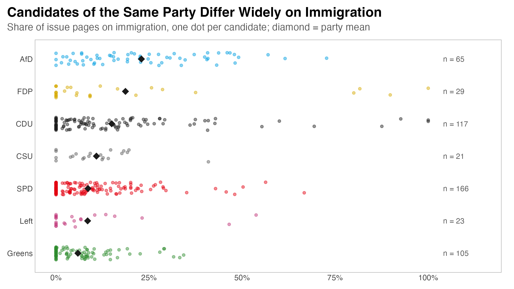
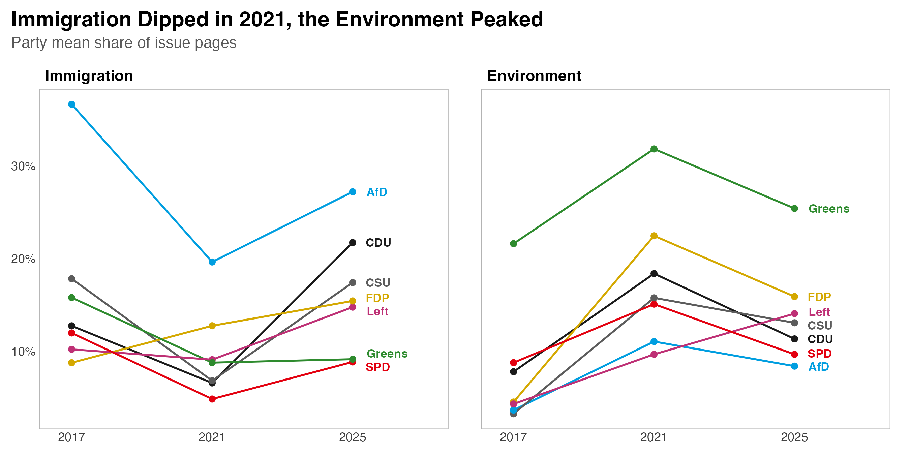
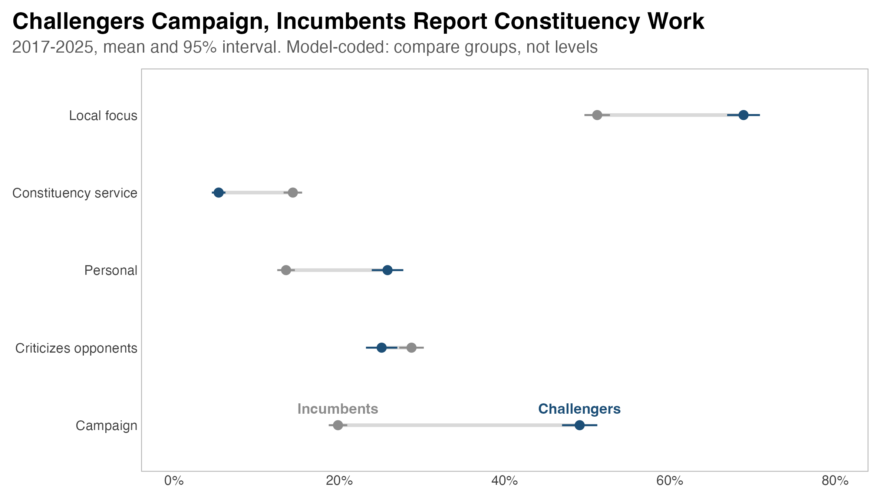

This dataset compiles website data for 8,600 candidate-years of candidates in the German federal elections of 2017, 2021 and 2025. 2,410 of these candidate-years have usable website content. The data are based on archived versions of the candidates' own campaign websites, since many of these sites go offline shortly after the election. For questions and comments, please email hhilbig@ucdavis.edu.
How the data were built
To construct the panel, we combine data from different sources. The candidate rosters are taken from Abgeordnetenwatch, which lists every candidate for a given Bundestag election. To find the candidates' websites, we draw on Wikidata. Since Wikidata does not list a website for many candidates, especially from smaller parties, we also try addresses based on the candidate's name. These guessed sites are only included if their pages show that the site in fact belongs to the candidate. For all sites, we then collect every archived page from the Wayback Machine up to election day. Page types, topics and campaign style are coded with open-weight models that we run on our own computers and on a university computing cluster, and features such as donation links are detected with simple rules.
What the data contain
For each candidate and election, the data includes (i) attention to 19 policy topics from the Comparative Agendas Project, measured as the share of a candidate's issue pages on each topic, (ii) five measures of campaign style (local focus, constituency service, personal presentation, criticism of opponents, and campaign content), (iii) the share of news, program, biography and contact pages, and (iv) indicators for whether the site has a donation link, a membership form, a newsletter or a volunteer sign-up. In addition, we add party, state, constituency, list position, incumbency and election results. Since every candidate has an Abgeordnetenwatch person ID, candidates can be followed across the three elections.
Coverage and limitations
In total, 2,410 of the 8,600 candidate-years, or about 28%, have usable website content. This number is low because a site has to (i) have been archived by the Wayback Machine and (ii) still be resolvable in 2026 to be included. Given that the websites of losing candidates often go offline shortly after the election, coverage is lowest in 2017. Coverage also differs by incumbency and party. Incumbents make up 19% of all candidates, but about 56% of the candidate-years with usable content. Coverage is also much higher for candidates from the CDU, CSU and SPD than for candidates from the smaller parties, where it ranges from 14% to 56% (see figure below). The data contains the full roster, and each measure has a status variable that records why it is missing for a given candidate.

We note two further limitations. First, when compared to our hand-coded pages, the models tend to assign topics and style features too often. We would therefore mostly use the shares to compare groups of candidates, and not interpret their absolute levels. Second, for 2025 we only observe the 115 days before the election, compared to about 270 days in 2017 and 2021. The codebook discusses which measures can be compared across elections, and which cannot.
Validation
To validate the coded variables, we hand-coded a sample of 232 pages, using the same definitions as the models. For all released variables, the point estimate of agreement between the models and our hand-coding is above the threshold that we had set before looking at the results. That being said, for some variables the sample is small, and we cannot rule out that agreement is in fact below the threshold. The gold labels, the sampling design and all agreement statistics are included in the deposit.
Exemplary descriptive applications
Below, we show some examples of how the data can be used. First, the data shows that parties differ in the topics that their candidates emphasize. In 2025, FDP candidates devote about half of their issue pages to the economy, while AfD candidates devote 27% to immigration and Green candidates 25% to the environment.

Second, there are large differences within parties. Among AfD candidates in 2025, the share of issue pages on immigration ranges from almost zero to more than 70%. Party-level data such as manifestos cannot capture this variation.

Third, the data can be used to study changes over time. For the CDU/CSU, SPD and AfD, attention to immigration fell between 2017 and 2021 and increased again by 2025. Attention to the environment, in contrast, peaks in 2021. We find the same pattern if we only use candidates who ran in two consecutive elections, which suggests that it is not driven by changes in which candidates have websites.

Finally, incumbents and challengers use their websites differently. Challengers' sites contain about 2.5 times as much campaign content as incumbents' sites, while incumbents report on constituency work almost three times as often.

Data and documentation
The Dataverse deposit includes the candidate-year panel, a version of the panel based on the whole election year, a long-format topic file, a provenance file, the page-level codes, coverage diagnostics, the gold labels and validation results, the codebook, as well as R and Python scripts to load the data. We only release derived variables, and not the text or URLs of the pages. Researchers who need the text for their own work can contact us. Data and documentation are licensed under CC-BY-4.0. The dataset can be combined with CLARA, which uses the same topic scheme for local party chapters.
Citation
Hilbig, Hanno, and Vincent Heddesheimer (2026). German Bundestag Candidate Websites (2017, 2021, 2025). Version 1.0.0. Harvard Dataverse. https://doi.org/10.7910/DVN/VKMK22